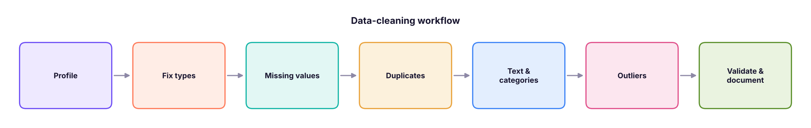
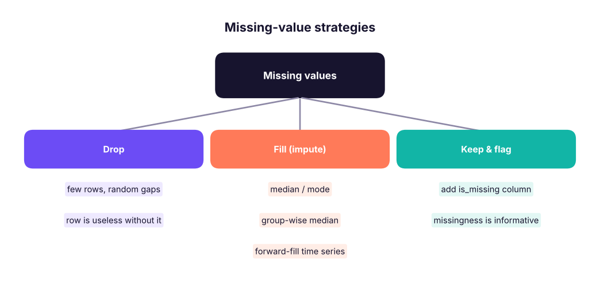
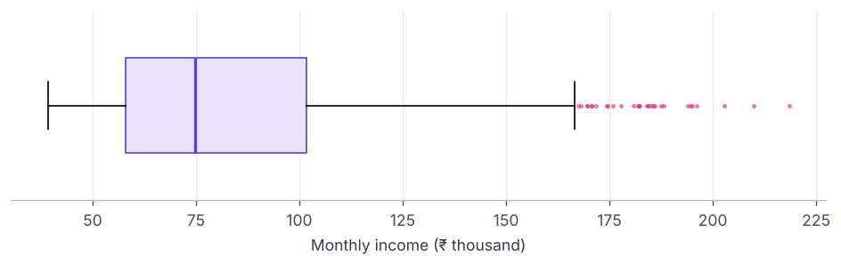

pandas II: Data Cleaning: Missing Values, Types, Duplicates, Text and Outliers
Turn messy data into analysis-ready data. Detect and treat missing values, fix data types, remove duplicates, standardise text, parse dates, handle outliers with IQR and caps, and document every step in a reusable cleaning function.
- Profile a dataset for missing values, wrong types, duplicates and inconsistent categories
- Choose and apply missing-value strategies (drop, fill with statistic, group-wise fill, flag)
- Convert types safely with to_numeric, to_datetime and astype, including categories
- Standardise text columns and map inconsistent labels
- Detect outliers with the IQR rule and z-scores and decide how to treat them
Why cleaning matters
Analysts often say 60–80% of project time goes into preparing data. Wrong types, gaps, duplicates and typos silently break totals, joins and models: garbage in, garbage out.

We will clean a deliberately messy extract:
import pandas as pd, numpy as np
pd.set_option("display.max_columns", 20); pd.set_option("display.width", 160)
raw = pd.DataFrame({
"order_id": ["A1", "A2", "A3", "A3", "A4", "A5", "A6", "A7", "A8"],
"city": [" pune", "Pune ", "DELHI", "DELHI", "New Delhi", "kochi", None, "Bengaluru", "Bangalore"],
"amount": ["1,200", "950", "₹3,400", "₹3,400", "abc", "780", "15000", "2,050", None],
"order_date":["2025-01-05", "05/01/2025", "2025-01-07", "2025-01-07", "2025-02-30", "2025-01-09", "2025-01-10", "2025-01-11", "2025-01-12"],
"qty": [2, 1, 3, 3, None, 1, 50, 2, 1],
})
print(raw)
print(raw.dtypes.to_dict()) order_id city amount order_date qty
0 A1 pune 1,200 2025-01-05 2.0
1 A2 Pune 950 05/01/2025 1.0
2 A3 DELHI ₹3,400 2025-01-07 3.0
3 A3 DELHI ₹3,400 2025-01-07 3.0
4 A4 New Delhi abc 2025-02-30 NaN
5 A5 kochi 780 2025-01-09 1.0
6 A6 NaN 15000 2025-01-10 50.0
7 A7 Bengaluru 2,050 2025-01-11 2.0
8 A8 Bangalore NaN 2025-01-12 1.0
{'order_id': <StringDtype(na_value=nan)>, 'city': <StringDtype(na_value=nan)>, 'amount': <StringDtype(na_value=nan)>, 'order_date': <StringDtype(na_value=nan)>, 'qty': dtype('float64')}Step 1: Profile
def profile(df):
return pd.DataFrame({"dtype": df.dtypes.astype(str), "missing": df.isna().sum(), "missing_%": (100 * df.isna().mean()).round(1),
"unique": df.nunique(), "example": df.iloc[0]})
print(profile(raw))
print("duplicate rows:", raw.duplicated().sum())dtype missing missing_% unique example order_id str 0 0.0 8 A1 city str 1 11.1 7 pune amount str 1 11.1 7 1,200 order_date str 0 0.0 8 2025-01-05 qty float64 1 11.1 4 2.0 duplicate rows: 1
Step 2: Fix types
df = raw.drop_duplicates().copy() # exact duplicates first
df["amount"] = pd.to_numeric(df["amount"].str.replace(r"[₹,]", "", regex=True), errors="coerce") # bad values -> NaN
df["order_date"] = pd.to_datetime(df["order_date"], format="%Y-%m-%d", errors="coerce") # strict format: others -> NaT
df["qty"] = df["qty"].astype("Int64") # nullable integer keeps NaN
print(df[["order_id", "amount", "order_date", "qty"]])
print(df.dtypes.to_dict()) order_id amount order_date qty
0 A1 1200.0 2025-01-05 2
1 A2 950.0 NaT 1
2 A3 3400.0 2025-01-07 3
4 A4 NaN NaT <NA>
5 A5 780.0 2025-01-09 1
6 A6 15000.0 2025-01-10 50
7 A7 2050.0 2025-01-11 2
8 A8 NaN 2025-01-12 1
{'order_id': <StringDtype(na_value=nan)>, 'city': <StringDtype(na_value=nan)>, 'amount': dtype('float64'), 'order_date': dtype('<M8[us]'), 'qty': Int64Dtype()}errors="coerce" turns unparseable values into NaN/NaT so you can count and inspect them instead of crashing. Always check how many values were coerced.
| Conversion | Use |
|---|---|
pd.to_numeric(s, errors="coerce") |
Text with numbers |
pd.to_datetime(s, format=..., dayfirst=True) |
Dates (give the format when known) |
s.astype("category") |
Repeated labels: less memory, ordered categories |
s.astype("Int64"), "boolean", "string" |
Nullable types that allow missing values |
Step 3: Missing values

print(df.isna().sum().to_dict())
df["amount_missing"] = df["amount"].isna() # flag before filling
df["amount"] = df["amount"].fillna(df["amount"].median())
df["qty"] = df["qty"].fillna(1)
df = df.dropna(subset=["order_date"]) # a row without a valid date is unusable here
print(df[["order_id", "amount", "amount_missing", "qty", "order_date"]]){'order_id': 0, 'city': 1, 'amount': 2, 'order_date': 2, 'qty': 1}
order_id amount amount_missing qty order_date
0 A1 1200.0 False 2 2025-01-05
2 A3 3400.0 False 3 2025-01-07
5 A5 780.0 False 1 2025-01-09
6 A6 15000.0 False 50 2025-01-10
7 A7 2050.0 False 2 2025-01-11
8 A8 1625.0 True 1 2025-01-12Real data: house_prices.csv has gaps in area_sqft. A group-wise fill uses similar houses (same number of bedrooms) instead of one global value:
h = pd.read_csv("house_prices.csv")
print("missing area:", h["area_sqft"].isna().sum())
by_bed = h.groupby("bedrooms")["area_sqft"].median().round(0)
print(by_bed.to_dict())
h["area_filled"] = h["area_sqft"].fillna(h.groupby("bedrooms")["area_sqft"].transform("median"))
print("after group-wise fill:", h["area_filled"].isna().sum(), "| global median would give", h["area_sqft"].median())missing area: 25
{1: 760.0, 2: 1115.0, 3: 1430.0, 4: 1715.0, 5: 1955.0}
after group-wise fill: 0 | global median would give 1240.0MCAR (completely at random) → dropping is safe. MAR (depends on other columns) → impute using those columns. MNAR (depends on the missing value itself, e.g. high earners hide income) → flag it; imputation can bias results. Never fill target variables for modelling.
Step 4: Duplicates
orders = pd.DataFrame({"order_id": ["B1", "B2", "B2", "B3"], "status": ["new", "new", "shipped", "new"], "updated": pd.to_datetime(["2025-01-01", "2025-01-01", "2025-01-03", "2025-01-02"])})
print(orders.duplicated().sum(), orders.duplicated(subset="order_id").sum())
latest = orders.sort_values("updated").drop_duplicates(subset="order_id", keep="last") # keep the latest version per key
print(latest)0 1 order_id status updated 0 B1 new 2025-01-01 3 B3 new 2025-01-02 2 B2 shipped 2025-01-03
Decide which columns define "the same record"; exact duplicates and key duplicates are different problems.
Step 5: Text and categories
df["city"] = df["city"].str.strip().str.title()
fix = {"New Delhi": "Delhi", "Bangalore": "Bengaluru"}
df["city"] = df["city"].replace(fix).fillna("Unknown")
print(df["city"].value_counts().to_dict())
print(pd.Series([" Data Science ", "MACHINE learning"]).str.split().str.join(" ").str.capitalize().tolist()){'Bengaluru': 2, 'Pune': 1, 'Delhi': 1, 'Kochi': 1, 'Unknown': 1}
['Data science', 'Machine learning']Useful .str methods: strip, lower/upper/title, replace, contains, startswith, extract, split, len, zfill, slice. For fuzzy spellings, libraries such as rapidfuzz score string similarity.
Step 6: Outliers
An outlier is far from most values. It may be an error (qty = 50 typed instead of 5) or real (one bulk order). Detect first, then decide.
hr = pd.read_csv("hr_employees.csv")
inc = hr["monthly_income"]
q1, q3 = inc.quantile([0.25, 0.75]); iqr = q3 - q1
lo, hi = q1 - 1.5 * iqr, q3 + 1.5 * iqr
print(f"Q1 {q1:,.0f} | Q3 {q3:,.0f} | IQR fences {lo:,.0f} to {hi:,.0f}")
out = hr[(inc < lo) | (inc > hi)]
print(len(out), "IQR outliers;", out["job_title"].value_counts().head(3).to_dict())
z = (inc - inc.mean()) / inc.std()
print((z.abs() > 3).sum(), "rows with |z| > 3")
capped = inc.clip(lower=inc.quantile(0.01), upper=inc.quantile(0.99)) # winsorise at 1st/99th percentile
print(f"max before {inc.max():,.0f} after capping {capped.max():,.0f}")Q1 58,062 | Q3 101,833 | IQR fences -7,594 to 167,489
29 IQR outliers; {'Sales Manager': 6, 'Finance Manager': 5, 'Operations Manager': 5}
19 rows with |z| > 3
max before 218,417 after capping 182,086
Senior roles earn more, so high incomes here are real, not errors. Options: keep them, analyse by job level, use medians, log-transform, or cap for models that are sensitive to extremes. Delete only values that are clearly impossible (negative age, qty 50 in a 1–5 item shop).
A reusable cleaning function
def clean_orders(raw: pd.DataFrame) -> pd.DataFrame:
"""Return cleaned orders and print a short audit log."""
df = raw.drop_duplicates().copy(); log = {"rows_in": len(raw), "dupes_removed": len(raw) - len(df)}
df["amount"] = pd.to_numeric(df["amount"].str.replace(r"[₹,]", "", regex=True), errors="coerce")
df["order_date"] = pd.to_datetime(df["order_date"], format="%Y-%m-%d", errors="coerce")
log["bad_dates_dropped"] = int(df["order_date"].isna().sum()); df = df.dropna(subset=["order_date"])
log["amount_imputed"] = int(df["amount"].isna().sum()); df["amount"] = df["amount"].fillna(df["amount"].median())
df["city"] = df["city"].str.strip().str.title().replace({"New Delhi": "Delhi", "Bangalore": "Bengaluru"}).fillna("Unknown")
df["qty"] = df["qty"].fillna(1).clip(upper=10).astype(int); log["rows_out"] = len(df)
print(log); return df
clean = clean_orders(raw)
assert clean["amount"].notna().all() and clean["order_id"].is_unique
print(clean){'rows_in': 9, 'dupes_removed': 1, 'bad_dates_dropped': 2, 'amount_imputed': 1, 'rows_out': 6}
order_id city amount order_date qty
0 A1 Pune 1200.0 2025-01-05 2
2 A3 Delhi 3400.0 2025-01-07 3
5 A5 Kochi 780.0 2025-01-09 1
6 A6 Unknown 15000.0 2025-01-10 10
7 A7 Bengaluru 2050.0 2025-01-11 2
8 A8 Bengaluru 2050.0 2025-01-12 1Summary
- Profile first: dtypes, missing counts, uniques, duplicates, odd categories.
- Convert with
to_numeric/to_datetime(errors="coerce")and count what was coerced; use nullable and category dtypes. - Missing values: drop, fill (median, mode, group-wise
transform), forward-fill, or flag; think about why they are missing. - Define duplicates by key;
sort_values+drop_duplicates(keep="last")keeps the latest record. - Standardise text with
.strand mapping dictionaries; detect outliers with IQR or z-scores and treat them deliberately. - Wrap cleaning in a function with an audit log and assertions so it is repeatable.
1. What does pd.to_numeric(s, errors="coerce") do with "abc"?
2. Which fill keeps group differences?
transform returns a value per row from its group.3. What are the IQR outlier fences?
4. How do you keep the latest record per order_id?
5. Why add an is_missing flag before filling?
6. Which dtype allows integers with missing values?
Int64 is pandas' nullable integer.Using hr_employees.csv: (1) profile every column. (2) Convert hire_date to datetime and compute tenure in years. (3) Check whether years_at_company agrees with the hire date. (4) Make education an ordered category. (5) Find income outliers per department using the IQR rule within each department.
Show solution
hr = pd.read_csv("hr_employees.csv")
print(profile(hr))
hr["hire_date"] = pd.to_datetime(hr["hire_date"])
hr["tenure"] = ((pd.Timestamp("2025-12-31") - hr.hire_date).dt.days / 365.25).round(1)
print((hr["tenure"].round() - hr["years_at_company"]).abs().describe())
print(hr["education"].unique())
def iqr_flag(x):
q1, q3 = x.quantile([.25, .75]); i = q3 - q1
return (x < q1 - 1.5 * i) | (x > q3 + 1.5 * i)
hr["income_outlier"] = hr.groupby("department")["monthly_income"].transform(iqr_flag)
print(hr.groupby("department")["income_outlier"].sum())Q: How do you handle missing values? First find out why they are missing and how many. Then drop (few, random), impute (median/mode, group-wise, model-based, forward-fill for time series) or flag. Impute after the train/test split in ML to avoid leakage.
Q: How do you treat outliers? Check whether they are errors or real. Fix or remove errors; for real extremes use robust statistics (median), transformations (log), capping, or models robust to outliers.
Q: What checks do you run before trusting a dataset? Row counts vs source, uniqueness of keys, missing rates, value ranges, valid categories, date ranges, and totals reconciled to a trusted report.
Practise more online
Free, trusted places to test yourself on this topic. Links open the original site in a new tab.